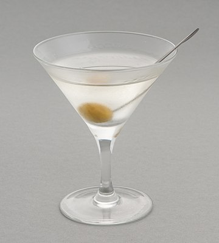

A cocktail is an alcoholic mixed drink. Most commonly, cocktails are either a single spirit or a combination of spirits, mixed with other ingredients such as juices, flavored syrups, tonic water, shrubs, and bitters. Cocktails vary widely across regions of the world, and many websites publish both original recipes and their own interpretations of older and more famous cocktails.
